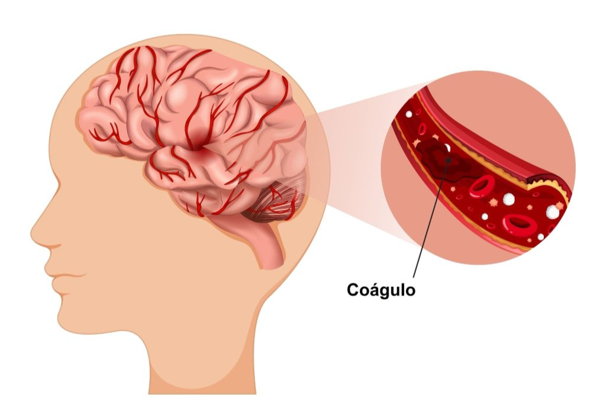

AVC Isquêmico
O tipo mais comum de AVC. Ocorre quando uma artéria do cérebro é obstruída por um coágulo, impedindo a passagem do sangue.
O Acidente Vascular Cerebral (AVC), popularmente conhecido como derrame, é uma emergência médica que ocorre quando o fluxo sanguíneo para uma parte do cérebro é interrompido ou reduzido, privando as células cerebrais de oxigênio e nutrientes essenciais. Se não tratado rapidamente, pode levar a danos cerebrais permanentes ou até à morte.
O tipo mais comum de AVC. Ocorre quando uma artéria do cérebro é obstruída por um coágulo, impedindo a passagem do sangue.

Ocorre quando um vaso sanguíneo no cérebro se rompe, causando sangramento e pressão sobre o tecido cerebral.
Os sintomas geralmente aparecem de forma rápida e inesperada. Muitas vezes, a própria pessoa não percebe o que está acontecendo, sendo comum que familiares ou pessoas próximas identifiquem os sinais.
Um método simples de reconhecimento é o protocolo conhecido como SAMU ou FAST:
Face: o rosto está torto?
Arms: consegue levantar os dois braços?
Speech: a fala está enrolada?
Time: chame socorro imediatamente
O tempo de atendimento é um dos fatores mais importantes no AVC. A cada minuto sem tratamento, milhões de neurônios podem ser perdidos.
No AVC isquêmico, existe uma chamada janela terapêutica, que geralmente varia entre 3 a 4 horas e meia após o início dos sintomas para tratamentos como a trombólise.
Quanto mais rápido o socorro, maiores são as chances de reduzir sequelas, preservar movimentos, funções cognitivas e qualidade de vida.
Embora nem todos os AVCs possam ser evitados, muitas medidas reduzem significativamente os riscos, como acompanhamento médico regular, hábitos de vida saudáveis e acesso à informação.
A informação salva vidas. Falar sobre AVC é uma forma de conscientizar, prevenir e preparar pessoas para agir rapidamente quando cada segundo faz diferença.
No dia 24 de junho de 2011, aos 22 anos, sofri um AVC isquêmico. Algo inesperado, especialmente para alguém tão jovem. Naquele momento, meu corpo pediu socorro de forma urgente. Lembro-me de sentir uma fraqueza súbita no lado esquerdo do corpo, acompanhada de dificuldade para falar e me movimentar. Fui levada ao hospital, mas, como não era comum AVC em pessoas jovens naquela época, não consegui um diagnóstico exato dentro do tempo adequado, o que agravou o meu quadro, resultando em sequelas irreversíveis. Desde então, convivo com hemiparesia esquerda, condição que afeta movimentos, força e autonomia no dia a dia.
Apesar das dificuldades, essa experiência deixou de ser apenas dor e medo. Tornou-se um marco profundo no meu caminho, um tempo em que precisei reaprender a confiar no próprio corpo, a respeitar meus limites e a valorizar cada pequeno avanço. Entre quedas e recomeços, esse momento passou a fazer parte do meu processo de crescimento, resiliência e reconstrução, moldando quem eu sou hoje.
Devido à demora no socorro, fiquei com sequelas irreversíveis no lado esquerdo do corpo, caracterizadas por uma hemiparesia esquerda. Foi um período marcado por dor e incertezas, mas também se tornou um ponto de virada, em que precisei ressignificar limites, reconstruir forças e aprender a seguir em frente de uma nova forma.
A reabilitação foi um processo longo e desafiador, que exigiu paciência, dedicação e muito apoio. Cada pequena conquista, desde recuperar movimentos básicos até readquirir autonomia nas tarefas do dia a dia, representou uma vitória significativa. A fisioterapia tornou-se parte essencial da minha rotina, fortalecendo não apenas o corpo, mas também a mente. Esta foto marca o depois. O tempo em que a dor virou aprendizado, as limitações se transformaram em força e a sobrevivência passou a significar coragem. O AVC não ficou no passado. Ele atravessa o presente de formas que nem sempre são visíveis. Mesmo após 15 anos, a fisioterapia, o cuidado diário e o respeito aos limites do corpo continuam fazendo parte da minha realidade. Esses são os percalços do caminho que sigo enfrentando — não como quem desistiu, mas como quem aprendeu a persistir, ressignificar e seguir em frente, um passo de cada vez.

.jpg)
Hoje, estou em transição de carreira para a área de Tecnologia da Informação, por meio do curso de Sistemas de Informação no IFG. A programação se tornou mais do que uma nova habilidade: passou a ser minha ferramenta de expressão, aprendizado e conscientização, unindo conhecimento técnico e propósito pessoal.
O AVC é uma condição séria que exige atenção imediata. Conhecer os sinais, agir rapidamente e buscar ajuda médica são passos cruciais para salvar vidas e minimizar sequelas. A prevenção, por meio de hábitos saudáveis e controle de fatores de risco, é fundamental para reduzir a incidência dessa condição.
Gostaria de expressar minha gratidão à equipe da PrograMaria pelo curso Eu Progr{amo}, que proporcionou conhecimento, orientação e recursos fundamentais para a realização deste projeto.
Este projeto é dedicado a todos que enfrentam desafios semelhantes e buscam recomeçar com coragem e determinação.